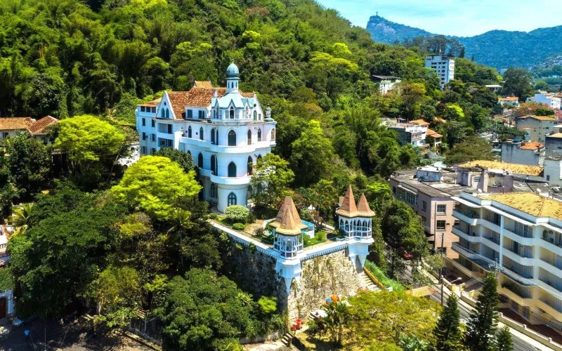

O Castelo do Valentim fica no bairro de Santa Teresa, no Rio de janeiro, e é uma construção histórica bastante diferente da arquitetura comum da cidade.
Ele foi construido no final do século XIX pelo Comendador Joaquim Antônio de Souza, conhecido como Valentim, que era um rico comerciante português. A construção tem características inspiradas em castelos europeus, com torres e elementos medievais.
O ímovel acabou ficando conhecido como Castelo do Valentim e se tornou uma das construções históricas curiosas do bairro. Atualmente, ele é uma referência arquitetônica e um exemplo de como antigas residências da elite carioca incorporavam estilos europeus.
Localização do Castelo do Valentim